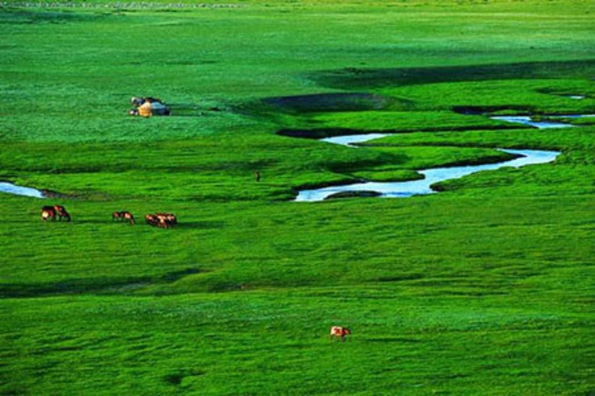

灯笼河草原旅游区距赤峰100公里，是翁牛特旗一处未被开垦和污染的地方。方圆143平方公里，青山妩媚、草木葳蕤，鲜花遍野，百鸟翻飞，是一个集河流、草原、森林、山岭于一体的旅游胜地。 灯笼河源自一个美丽的传说：传说三岔档山里藏有一对神灯，每年除夕夜，神灯一前一后，顺河道下行至大石门，有幸见到神灯的，便吉祥如意，合家安泰。从此这里有了一个美妙响亮的名字——灯笼河。原来“灯笼”系蒙语“登努日”的谐音，全称“登努日高勒”，汉译为沼泽地上之河。多年来众口流传，谐音误作河名，传说由此而生。灯笼河草原 景点 灯笼河牧场所在地称大石门，出场部西行300米许，在淙淙溪流北岸，两崖突兀并立，如巨斧砍削，中间齐刷刷扯开5米宽的缝隙，远望近观，俨若门户。透过石门北望，可见坡上一馒头状的小山，石崖顶端，盛开着一簇簇嫣红似火的野花，与溪流南侧的天然白桦林互相映衬，构成红绿错杂的奇妙景观。 由石门西南方向登山，山顶地势平缓，是一大片碧绿如茵的草甸，西侧一峰横列，宛若翠屏，当地人称西横立山，山东麓，东西走向排列着13个石堆。石堆间距约10米多，中间一个独大，两侧的略小，这便是“十三太保”，相传晚唐沙陀部酋长李克用曾在这里戍守，他的13个儿子骁勇善战，为护卫此地立下殊勋，后人便堆积这些石堆以示纪念，十三太保即十三敖包。 沿赤峰——经棚公路北行，路边有金界壕遗迹。金界壕曾误称成吉思汗边堡或边墙，其实是金熙宗天会年间(公元1135——1137)修筑的一项军事防御工程，它西起武川县的大青山麓，东至莫力达瓦境内的嫩江西岸，绵延5000公里，在翁旗境内有6公里左右，虽经800余载的风沙雍塞，界壕中间凹陷，两侧弃土隆起，仍清晰可辨。 特色 灯笼河这个名字或许作为草原的名字有一些过于朴实，但是它那未经开垦的原始的美却令人陶醉，盛夏里，抛却凡尘恼人事儿，到灯笼河草原去策马扬鞭……灯笼河草原旅游区距赤峰100公里，是翁牛特旗一处未被开垦和污染的地方。方圆143平方公里，青山妩媚、草木葳蕤，鲜花遍野，百鸟翻飞，是一个集河流、草原、森林、山岭于一体的旅游胜地。 折叠逃离炎热夏天灯笼河草原觅清凉 到了灯笼河草原，才真正见识到了什么叫碧草连天花似海、蓝天通透云似锦、心随自然意悠远。站在草原上，天格外蓝，草格外绿，花鲜水美，空气清新。在这幽境里深吸几口气，心情也格外舒畅，再四处走走，看看山，逛逛景，寻幽揽胜，别有桃源雅意。旅游区内，女阴山和男根岭壁立森森，岩崖陡峭；“十三太保”遗迹和传说更是引人遐思；独自坐落在草原花海的盘龙石，高数丈，兀然挺立，遗世临风，仿佛来自天外，四周泉水渗涌，润草育花，清冽甘甜。 折叠逃离凡尘俗世灯笼河草原与百花约会
灯笼河草原以高山湿地为主，波澜起伏，一片绿洲。夏季百花盛开，金黄色的金莲花、山罂粟、蒲公英，紫红色的地榆、银白色的陀罗、钢罗花，雪白的芍药、银莲花，粉红的柳蓝，石柱子、蓝色的飞燕草、蛋黄色的柴胡草、黄花菜及叫不上名的花争先绽放；河柳、杜鹃、山丁等原始丛棵虽不高，但婀娜多姿，给人以生机。这里虽处亚寒带，无霜期不足四个月，但从百花坡那里看到草木的顽强，看到了生的欲望与花的辉煌。姹紫嫣红绽满坡，香清蕊嫩艳婀娜，一年此刻辉煌写，大笑风狂雨雪多。在三岔档景区骑马归来，路过一片沼泽之地，那里水源丰沛，绿草肥美，每当初夏时节，金莲花盛开，一片金黄。虽草地凹凸不平，但一棵棵一簇簇映日而开，含香而笑。既有荷花之韵致，又具黄花之秀美。 折叠追忆远古英豪灯笼河朝拜“塞北灵验佛” 要说起这里最出名的古迹，当首推已有300多年历史的赛罕庙和具有800多年历史的金界壕。塞罕庙位于灯笼河海拔1700多米的赛罕坝梁上，据传为康熙北征时所建，由一块巨石雕刻而成(曾因文革时期遭到人为的破坏，后来当地人先后投入30多万元加以修缮)，它古朴黄雅，精巧别致，里面供奉了一尊“塞北灵验佛”，至今香火不断。掩映于花丛碧草之里的赛罕庙已成了灯笼河旅游区闻名遐迩的景点。 人们提起长城马上就会想到东起山海关、西止嘉峪关的万里长城。然而，在灯笼河草原上也有一道长城(在灯笼河境内仅存6公里左右)，史称金界壕，从公元1123年开始修建，直到1198年前后才最终成形，其间历时70余年。因为修筑于金代，所以也叫金长城。与人们熟知的万里长城不同，这是一道没有城墙的长城。在内蒙古辽阔的土地上，东西南北纵横走向有许多道起伏，这便是金界壕的遗址。它是金代女真人为了防御蒙古铁骑南下侵扰，而在在整个北方草原上修筑的边塞军事防御工程。与我们熟悉的明清时期的长城不同，金界壕不用砖砌，不用石垒，绝大多数都是就地取材，仅仅由夯土砌成。界壕是以挖掘成一道漫长的壕为主，壕堑深约4到5米，上宽8到10米，壕底宽仅为4.5米；而挖掘壕堑时掘出的土石方，则堆积在壕堑南侧，形成漫长的界堤。界堤最高的不过6到8米，一般的都只有3、4米高。远远看去就像是一条长龙横卧在草原上一样。今天金界壕的遗迹主要分布在我国内蒙古自治区境内，还有一小部分在俄罗斯和蒙古。金界壕现存于地上所能看到的长度，约5500公里。以走向而言可分为岭北线、北线和南线。 人文景观驰名，自然景观独特的灯笼河草原，正以它“美丽神奇无污染，清爽静谧有芬芳”的独特魅力，吸引着四面八方的游人。
